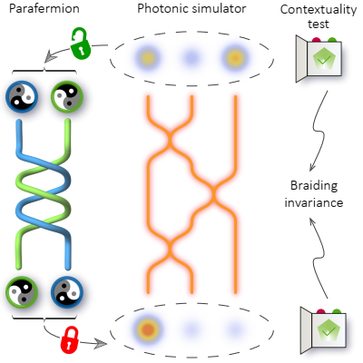
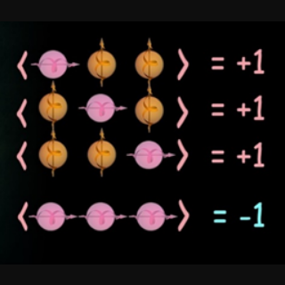

Featured Research

Simulating topological contextuality
Topological quantum computation is based on braiding of non-abelian anyons; however, people know such operation is not "universal" to establish a full-stack quantum advantage. Here we introduce quantum contextuality to the topological system and show through magic state distillation it can activate universality together with braiding. Furthermore, contextuality inherits the traits of fault-tolerant in the topological system. We justify the computation architecture with our dissipative photonic quantum processor.
Links: PRX Quantum 2 (3), 030323 (2021) (Editor's Suggestion) arXiv preprint mirror

Nonlocality without inequality
Describing the quantum world using classical language can lead to a seemingly contradictory result "+1=-1". Here we give a recipe for constructing such paradoxes in graph states, and show these paradoxes exist even in mixed states. Our result can be used in multipartite entanglement witness and quantum state verification.
Links: npj Quant. Inf. 7 66 (2021) , mirror.
Publications
Preprints
- Zheng-Hao Liu, Qiang Li, Bi-Heng Liu, Yun-Feng Huang, Jin-Shi Xu, Chuan-Feng Li, and Guang-Can Guo, "Twenty years of quantum contextuality at USTC". arXiv: 2205.15538. Comments are welcome!
- Yan Wang, Matteo Piccolini, Ze-Yan Hao, Zheng-Hao Liu, Kai Sun, Jin-Shi Xu, Chuan-Feng Li, Guang-Can Guo, Roberto Morandotti, Giuseppe Compagno, and Rosario Lo Franco, "Direct measurement of particle statistical phase". arXiv: 2202.00575.
- Yan Wang, Ze-Yan Hao, Zheng-Hao Liu, Kai Sun, Jin-Shi Xu, Chuan-Feng Li, Guang-Can Guo, Alessia Castellini, Bruno Bellomo, Giuseppe Compagno, and Rosario Lo Franco, "Experimental remote entanglement distribution in a photonic quantum network through multinode indistinguishability". arXiv: 2107.03999.
- Yu Meng, Zheng-Hao Liu, Zhikuan Zhao, Peng Yin, Yi-Tao Wang, Wei Liu, Zhi-Peng Li, Yuan-Ze Yang, Zhao-An Wang, Jin-Shi Xu, Shang Yu, Jian-Shun Tang, Chuan-Feng Li, and Guang-Can Guo, "Probing asymmetry in spatial-temporal correlations in quantum causal inference". rs-311195.
Journal articles
- Kai Sun, Zheng-Hao Liu, Yan Wang, Ze-Yan Hao, Xiao-Ye Xu, Jin-Shi Xu, Chuan-Feng Li, Guang-Can Guo, Alessia Castellini, Ludovico Lami, Andreas Winter, Gerardo Adesso, Giuseppe Compagno, and Rosario Lo Franco, "Activation of indistinguishability-based quantum coherence for enhanced metrological applications with particle statistics imprint". Proceedings of the National Academy of Sciences of the United States of America, 119, e2119765119 (2022). arXiv: 2103.14802.
- Yi Zheng, Mu Yang, Zheng-Hao Liu, Jin-Shi Xu, Chuan-Feng Li, and Guang-Can Guo, "Toward practical weak measurement wavefront sensing: spatial resolution and achromatism". Optics Letters 47, 2734–2737 (2022).
- Ze-Yan Hao, Kai Sun, Yan Wang, Zheng-Hao Liu, Mu Yang, Jin-Shi Xu, Chuan-Feng Li, and Guang-Can Guo, "Demonstrating shareability of multipartite Einstein-Podolsky-Rosen steering". Physical Review Letters 128, 120402 (2022).
- Yu-Wei Liao, Qiang Li, Mu Yang, Zheng-Hao Liu, Fei-Fei Yan, Jun-Feng Wang, Ji-Yang Zhou, Wu-Xi Lin, Yi-Dan Tang, Jin-Shi Xu, Chuan-Feng Li, and Guang-Can Guo, "Deep-learning-enhanced single-spin readout in silicon carbide at room temperature". Physical Review Applied 17, 034046 (2022).
- Zheng-Hao Liu, Jin-Shi Xu, Chuan-Feng Li, "Quantum information masking". Acta Optica Sinica 42, 0327001 (2022).
- Yi Zheng, Mu Yang, Zheng-Hao Liu, Jin-Shi Xu, Chuan-Feng Li, and Guang-Can Guo, "Detecting momentum weak value: Shack–Hartmann versus a weak measurement wavefront sensor". Optics Letters 46, 5352–5355 (2021).
- Zheng-Hao Liu, Kai Sun, Jiannis K. Pachos, Mu Yang, Yu Meng, Yu-Wei Liao, Qiang Li, Jun-Feng Wang, Ze-Yu Luo, Yi-Fei He, Dong-Yu Huang, Guang-Rui Ding, Jin-Shi Xu, Yong-Jian Han, Chuan-Feng Li, and Guang-Can Guo, "Topological contextuality and anyonic statistics of photonic-encoded parafermions". PRX Quantum 2, 030323 (2021) (Editor's Suggestion.) Press coverage by PRX Quantum twitter, USTC news.
- Jun-Feng Wang, Fei-Fei Yan, Qiang Li, Zheng-Hao Liu, Jin-Ming Cui, Zhao-Di Liu, Adam Gali, Jin-Shi Xu, Chuan-Feng Li, and Guang-Can Guo, "Robust coherent control of solid-state spin qubits using anti-Stokes excitation". Nature Communications 12, 3223 (2021).
- Zheng-Hao Liu, Xiao-Bin Liang, Kai Sun, Qiang Li, Yu Meng, Mu Yang, Bo Li, Jing-Ling Chen, Jin-Shi Xu, Chuan-Feng Li, and Guang-Can Guo, "Photonic implementation of quantum information masking". Physical Review Letters 126, 170505 (2021). Press coverage by People's daily (archive), Xinhua press, CCTV news, USTC news.
- Zheng-Hao Liu, Jie Zhou, Hui-Xian Meng, Mu Yang, Qiang Li, Yu Meng, Hong-Yi Su, Jing-Ling Chen, Kai Sun, Jin-Shi Xu, Chuan-Feng Li, and Guang-Can Guo, "Experimental test of the Greenberger–Horne–Zeilinger-type paradoxes in and beyond graph states". npj Quantum Information 7, 66 (2021). Press coverage by Scientific American (Chinese).
- Kai Sun, Yan Wang, Zheng-Hao Liu, Xiao-Ye Xu, Jin-Shi Xu, Chuan-Feng Li, Guang-Can Guo, Alessia Castellini, Farzam Nosrati, Giuseppe Compagno, Rosario Lo Franco, "Experimental quantum entanglement and teleportation by tuning remote spatial indistinguishability of independent photons". Optics Letters 45, 6410–6413 (2020).
- Mu Yang, Qiang Li, Zheng-Hao Liu, Ze-Yan Hao, Chang-Liang Ren, Jin-Shi Xu, Chuan-Feng Li, and Guang-Can Guo, "Experimental observation of an anomalous weak value without post-selection". Photonics Research 8 (9), 1468–1474 (2020).
- Jun-Feng Wang, Zheng-Hao Liu, Fei-Fei Yan, Qiang Li, Xin-Ge Yang, Liping Guo, Xiong Zhou, Wei Huang, Jin-Shi Xu, Chuan-Feng Li, and Guang-Can Guo, "Experimental optical properties of single nitrogen vacancy centers in silicon carbide at room temperature". ACS Photonics 7 (7), 1611–1616 (2020).
- Zheng-Hao Liu, Wei-Wei Pan, Xiao-Ye Xu, Mu Yang, Jie Zhou, Ze-Yu Luo, Kai Sun, Jing-Ling Chen, Jin-Shi Xu, Chuan-Feng Li, and Guang-Can Guo, "Experimental exchange of grins between quantum Cheshire cats". Nature Communications 11, 3006 (2020). Research highlight on CAS Physics, Press coverage by Xinhua press, Guangming Daily, USTC news, Scientific American (Chinese).
- Jun-Feng Wang, Fei-Fei Yan, Qiang Li, Zheng-Hao Liu, He Liu, Guo-Ping Guo, Li-Ping Guo, Xiong Zhou, Jin-Ming Cui, Jian Wang, Zong-Quan Zhou, Xiao-Ye Xu, Jin-Shi Xu, Chuan-Feng Li, and Guang-Can Guo, "Coherent control of nitrogen-vacancy center spins in silicon carbide at room temperature". Physical Review Letters 124 (22), 223601 (2020).
- Mu Yang, Ya Xiao, Yu-Wei Liao, Zheng-Hao Liu, Xiao-Ye Xu, Jin-Shi Xu, Chuan-Feng Li, and Guang-Can Guo, "Zonal reconstruction of photonic wavefunction via momentum weak measurement". Laser & Photonics Reviews 14 (5), 1900251 (2020).
- Ze-Di Cheng, Zheng-Hao Liu, Qiang Li, Zheng-Wei Zhou, Jin-Shi Xu, Chuan-Feng Li, and Guang-Can Guo, "Flexible degenerate cavity with ellipsoidal mirrors". Optics Letters 44 (21), 5254 (2019).
- Zheng-Hao Liu, Hui-Xian Meng, Zhen-Peng Xu, Jie Zhou, Sheng Ye, Qiang Li, Kai Sun, Hong-Yi Su, Adán Cabello, Jing-Ling Chen, Jin-Shi Xu, Chuan-Feng Li, and Guang-Can Guo, "Experimental observation of quantum contextuality beyond Bell nonlocality". Physical Review A 100 (4), 042118 (2019).
- Qiang Li, Ji-Yang Zhou, Zheng-Hao Liu, Jin-Shi Xu, Chuan-Feng Li, and Guang-Can Guo, "Stable single photon sources in the near C-band range above 400 K". Journal of Semiconductors 40 (7), 072902 (2019).
- Mu Yang, Zheng-Hao Liu, Ze-Di Cheng, Jin-Shi Xu, Chuan-Feng Li, and Guang-Can Guo, "Deep hybrid scattering image learning". Journal of Physics D: Applied Physics 52 (11), 115105 (2019). Selected in Special Issue on Translational Biophotonics. arXiv: 1809.07706
- Ze-Di Cheng, Qiang Li, Zheng-Hao Liu, Fei-Fei Yan, Shang Yu, Jian-Shun Tang, Zheng-Wei Zhou, Jin-Shi Xu, Chuan-Feng Li, and Guang-Can Guo, "Experimental implementation of a degenerate optical resonator supporting more than 46 Laguerre-Gaussian modes". Applied Physics Letters 112 (20), 201104 (2018).